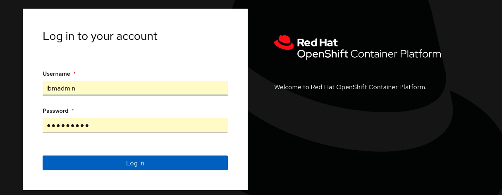
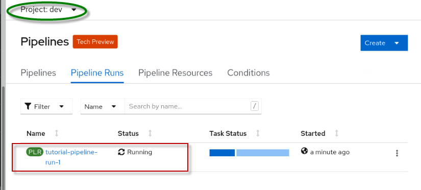

OpenShift Pipelines with Tekton Demo
This demo covers how to use deploy the CustomerOrderServices application to Red Hat OpenShift using the OpenShift Pipelines.
OpenShift pipelines
Red Hat OpenShift Pipelines is a cloud-native, continuous integration and continuous delivery (CI/CD) solution based on Kubernetes resources.
It uses Tekton building blocks to automate deployments across multiple platforms by abstracting away the underlying implementation details. Tekton introduces a number of standard custom resource definitions (CRDs) for defining CI/CD pipelines that are portable across Kubernetes distributions.
For this demonstration, a collection of assets are provided that delivers a continuous integration solution for building and deploying your application within Red Hat OpenShift and Kubernetes.
The diagram below shows the flow of the simple pipeline to build and deploy an application within Red Hat OpenShift.
-
Clone your source code from GitHub and store it locally
-
Build the Docker image. Once the image is built, the image is pushed to a local image repository in OpenShift.
-
Deploy the containerized application to the Open Liberty runtime in OpenShift
Summary
This demo has the following steps:
- Pre-reqs to complete before the demonstration
- Clone the application code locally
- Create an application project (namespace) in OpenShift
- Create the Pipeline resources in OpenShift
- Execute the OpenShift pipeline
- Validate the application
- Review and Next Steps
Pre-reqs to complete before the demonstration
It is assumed that you are using the Teaching your monolith to dance workshop environment for the demonstration. The environment runs in Skytap.
Follow the instructions in the URL below to reserve an environment.
-
Using the link below, open a new Browser window or tab. Then, follow the instructions to reserve single environment for the demonstration:
https://ibmtechsales.github.io/was-appmod/environments-setup/
-
Start the Skytap environment if it is no already started
-
After the VMs are started, click the desktop VM icon to access it.

The Desktop Linux Desktop is displayed. You execute all the lab tasks on this desktop VM.
-
Login with ibmuser ID.
-
Click on the ibmuser icon on the screen.
-
When prompted for the password for ibmuser, enter "engageibm" as the password:

-
-
Resize the Skytap environment window for a larger viewing area while doing the lab. From the Skytap menu bar, click on the "Fit to Size" icon. This will enlarge the viewing area to fit the size of your browser window.

-
Open a terminal window by clicking its icon from the Desktop toolbar.

-
Clone the GitHub repo containing the lab workshop / demo artifacts.
a. In the terminal window, run the following command to clone the GitHub repository for this workshop / demo.
git clone https://github.com/IBMTechSales/openshift-workshop-wasSample output

-
Change to the cloned github directory where the pipelines materials are downloaded
cd /home/ibmuser/openshift-workshop-was/labs/Openshift/DevopsManagement/tekton-pipeline
-
You will find the following pipeline resources in the tekton-pipeline folder:
- git-clone.yaml - Creates the Tekton task to clone a Git repo from a given URL and loads a Workspace
- buildah.yaml – Creates the build and push Tekton tasks
- oc-deploy.yaml – Creates the Tekton deployment Task to deploy the application to OpenShift
- pipeline-deploy.yaml – Creates the pipeline that invokes the tasks defined
- pipeline-deploy-run.yaml – Runtime execution of the pipeline to build and deploy the app
-
Login to OpenShift. Type
oc loginto login to OpenShift. Use ibmadmin for the username and engageibm for the password.
-
Login to OpenShift Console UI.
-
From the browser, click the openshift console bookmark located on the bookmark toolbar and login with the htpasswd option.
-
Login to the OpenShift account with username **ibmadmin and password engageibm

-
The Demonstration Steps
Create an application namespace for the Dev environment
-
Create a new OpenShift project for the
devnamespace using the following stepsoc new-project dev
Create the Pipeline resources in OpenShift
The Pipeline resources are defined in YAML files. In this demonstration, the YAML files have been provided for the tasks and pipeline resources.
- git-clone.yaml - Creates the Tekton task to clone a Git repo from a given URL and loads a Workspace
- buildah.yaml – Creates the build and push Tekton tasks
- oc-deploy.yaml – Creates the Tekton deployment Task to deploy the application to OpenShift
- pipeline-deploy.yaml – Creates the pipeline that invokes the tasks defined
- pipeline-deploy-run.yaml – Runtime execution of the pipeline to build and deploy the app
In the Terminal window, ensure you are at the following folder, then create the pipeline resources listed above, as illustrated below:
/home/ibmuser/openshift-workshop-was/labs/Openshift/DevopsManagement/tekton-pipeline
-
Create the git-clone task
The git-clone task is createdoc create -f git-clone.yaml oc get tasks
-
Create the buildah task
The buildah task is createdoc create -f buildah.yaml oc get tasks
-
Create the deployment task
oc create -f oc-deploy.yaml oc get tasksThe deployment-cm task is created
-
Create the pipeline
oc create -f pipeline-deploy.yaml oc get pipelinesThe tutorial-pipeline pipeline is created

Run the pipeline
An instance of a pipeline is known as a pipelineRun.
A PipelineRun starts a Pipeline and ties it to the Workspace containing all required resources. It automatically creates and starts the TaskRuns for each Task in the Pipeline.
-
Run the pipeline to build and deploy the CustomerOrderServices application within OpenShift, in the
devnamespace.oc create -f pipeline-deploy-run.yaml
Verify the pipeline is running
An instance of the pipeline was executed at the completion of the pipeline configuration in the previous step.
- In the OpenShift Container Platform UI, select the
devproject and navigate to Pipelines --> Pipeline Runs

- Click on the name of the running Pipeline Run, see the tasks that are being executed, which are finished, and the status of the tasks.
- Select the Logs tab and watch the pipeline run the tasks.

- Return to the Details view for the pipeline. Then click on the
deploy-to-clustertask.

- When the task completes, you will see the logs indicate that the application is deployed to OpenShift.
Validate the application
Now that the pipeline is complete, validate the Customer Order Services application is deployed and running in dev project
- In the OpenShift Console, navigate to Workloads --> Deployments view and click on the
cosDeployment to view deployment details

- Next, navigate to the Networking --> Routes view and click on the Location to open a browser session for the application
- Add
/CustomerOrderServicesWebto the end of the URL in the browser to access the application
- Log in to the application with
username: skywalkerandpassword: force